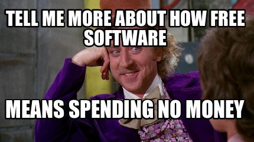

Containers, Actually
- Gruff old fool, Rough diamond caterer
- Harry / Alan Rickman
Natalie / Martine McCutcheon
- Script (docker-compose.yml or Kubernetes definitions)
- Studio (Kubernetes)
Kubernetes
- Each thing has it's own YAML definition
- Local, AWS, GCE, Azure, yadayadaya
- You can control any cluster from
kubectl
- Whole config is versionable (redspread/spread)
- Physical machines no longer an app-facing concern
Gruber-netes
- But you've developed a massive headache
and can't find a YAML file for alka seltzer
Nginx?
POD
metadata:
labels:
service: nginx
containers:
- image: myrepo/nginx
name: nginx
ports:
- containerPort: 443
protocol: TCP
SERVICE
spec:
ports:
- port: 443
targetPort: 443
protocol: TCP
selector:
service: nginx
Deployable
DEPLOYMENT
spec:
replicas: 1
template:
[POD YAML]
SERVICE
spec:
ports:
- port: 443
targetPort: 443
protocol: TCP
selector:
service: nginx
Am-Tips
- kube-aws is cool, but assumes you're loaded
- GCE gives you a $300 starter, and only now have I remembered to cancel it
- Minikube is actually free, but CI to your laptop isn't very useful long-term

Other stuff
- Secrets
- Backups
- Testing
- Automated Deployment
& ✨Gitlab CI✨
Questions
should be directed to Reddit